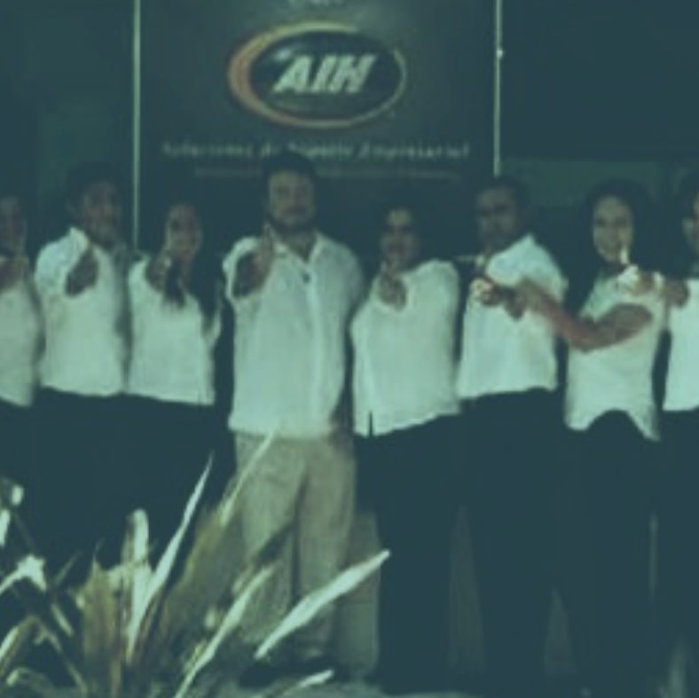

Historia Trayectoria
Fundación
A finales de los años 90 Ramiro Guerrero inició con la idea de aportar valor a las compañías y personal del rubro de los clubes vacacionales a través de la tercerización de servicios contables y eventualmente de nóminas, así como recursos humanos. Anteriormente los representantes de ventas de la industria hotelera no recibían ningún tipo de beneficios salvo el pago de sus comisiones. AIH nace con la intención de brindar estructura y además el acceso a beneficios sociales a empleados y fomentar el desarrollo de empresas más responsables en México, convirtiéndose así en la empresa pionera en servicios de outsourcing y tercerización del país.
keyboard_arrow_up
keyboard_arrow_down

